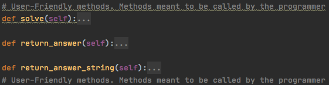
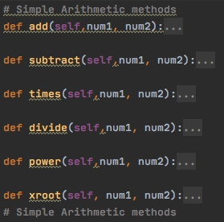
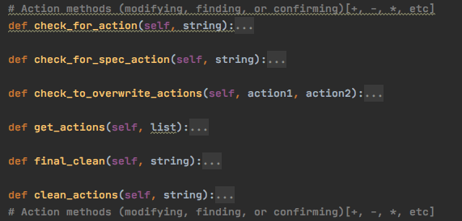
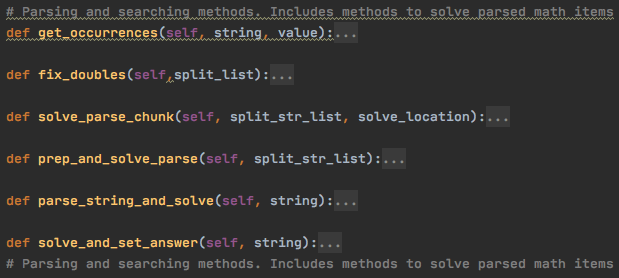
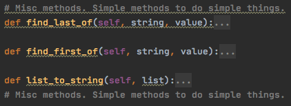
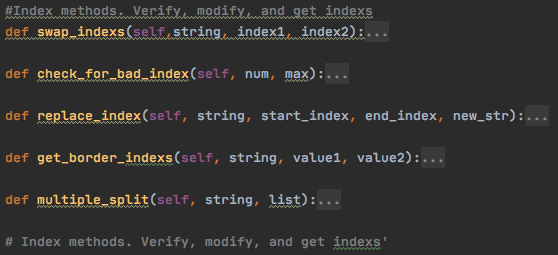

Calculator Class (OOP algorithm): Documentation
Produced by CDE Programming Core.
Website produced by CDE Programming Core.
Welcome to the documentation page for the Calculator class! Click here to go back to the main page.
The methods that a programmer would use are below.

Methods intended for use from programmer
- __init__(equation)
- The initiate method requires a variable named equation. This variable should be a string that the programmer wants to solve. EX: The programmer would send "12*33+4/(33-28)^2".
- solve()
- This method will take the equation that was previously sent in the __init__ method and run it through other methods to clean errors, parse, and solve the equation.
- return_answer()
- This simple method will return the result from using the solve() method as a float value.
- return_answer_string()
- This simple method will return the result from using the solve() method as a string value.
This next list of methods are methods that the class uses. Note they can be used in other programs possibly requiring only slight modifications.

Simple arithmetic methods
- add(num1, num2)
- This method will add num1 and num2 together returning the answer. EX: add(12, 8), Returns 20
- subtract(num1, num2)
- This method will subtract num1 and num2 returning the answer. EX: subtract(12, 8), Returns 4
- times(num1, num2)
- This method will times num1 and num2 together returning the answer. EX: times(12, 8), Returns 96
- divide(num1, num2)
- This method will divide num1 and num2 together returning the answer. EX: divide(12, 8), Returns 1.5
- power(num1, num2)
- This method will put num1 to the power of num2 returning the answer. EX: power(2, 3), Returns 8
- xroot(num1, num2)
- This method will find the num1 root of num2 returning the answer. EX: xroot(3, 8), Returns 2
These are methods that performed scans on the actions (cleaned, counted, and modified). Actions are things like +, -, *, /

Methods for actions like +, -, *, / ect
- check_for_action(string)
- This method would scan a character and see if it was inside a list that contained an array of actions. Ex: check_for_action("b") b would be scanned to see if it was an action like +, -, *, or / ect.
- check_for_spec_action(string)
- This works exactly like check_for_action(string), however scans for a higher priority action like * or /.
- clean_actions(string)
- This method will scan a string and clean, replace, and modify innapropriate arithmetic order. Ex (12**12--2+-3) to (12*12+2-3)
- check_to_overwrite_actions(action1, action2)
- This method is used in clean_actions(string) to fix arithmetic action errors. Ex: 12--4 to 12+4 ect
- get_actions(list)
- This method will recieve a list that will be scanned and the actions
in it will be found. You send a list because it is easier to seperate
or in otherwords scan a string if it is in a split list. For an example:
["-12", "+", "32"] and it would find the actions. The special thing
about this method though, is that it finds the indexs of the actions,
but in order of operations. This method is NOT
easily distributable outside of this class.
Ex:
["12", "+", "2", "^", "2", "-", "44", "/", "6"]. Sending this list
to this method it will return the index's of all the actions from
highest to lowest priority. Returns: [3, 7, 1, 5]
- final_clean(string)
- This simple method will call clean_actions() and do some simple extra scanning
incase there were extra actions that were not used. Ex: "12+5-" to "12+5"
These methods are methods used for things like parsing, and solve the parsed items.

Parsing methods, and methods to solve the parsed objects.
- get_occurrences(string, value)
- This method is not to be confused with the built in method for strings, str().count(item).
This method finds the occurrences of an item in a string, but returns the index instead of size.
Ex: get_occurrences("123+345+453", "3") it will find the index of all the 3's and return a list of the indexs.
in this example it returns, : [2,4,10]
- solve_and_set_answer(string)
- This method is NOT easily distributable, but is rather tailored to this class.
This method will send an unsolved equation to the required methods to be parsed, cleaned, and solved.
Afterwhich it will set the answer variables inside the class. This method does however have an important
role in properly solving. It will follow order of operations by properly solving items in parenthasis and move up
to other parenthasis. The best way to understand is an example. : "((12+8*(4/9+0.5))^2)" For an example, this would
be a problem to be solved or an equation to be solved. This method will first do the 4/9+0.5, than 12+8*.94 (4/9+0.5=.94) and lastly that squared.
So at the end of the day, this method is responsible for properly solving chunks of the equation in order.
- parse_string_and_solve(string)
- This method is responsible for calling the needed methods to parse a string like "12+44--3" and call the methods required to solve it.
- prep_and_solve_parse(split_str_list)
- Understand, this method is called inside of parse_string_and_solve(string). This method will
take a properly parsed list of items like ["-12", "+", "32"] and solve it in order of operations. This method
essencially solves the list by calling other methods and is used to get the final answer.
- solve_parse_chunk(split_str_list, solve_location)
- This method is called by prep_and_solve_parse(split_str_list) to send the equation and the desired location
that needs to be solved. Than the method will take that chunk from the equation and send it to an Arithmetic Method to be solved.
- fix_doubles(split_list)
- This is a very simple, but important method. This method is a clean method.
Essencially what this method does is combines actions to numbers if they belong to that number.
This is needed further on in the program when it needs to solve the equation otherwise it will not solve properly.
Ex: "12*-55" would be parsed in methodName() and than sent here as ["12", "*", "-", "55"].
This method would turn the list into, ["12", "*", "-55"]. Subtle, but important.
These are uncatagorized, simple methods used to do simple tasks.

Uncatagorized Methods
- find_last_of(string, value)
- This simple method will find the last value in the string sent. Ex find_last_of("abcbcabacb", "a")
it would return 7. Simply returns the index of the last value provided.
- find_first_of(string, value)
- Similar to find_last_of(string, value), but also different.
This method will find the index of the first value in the string. Ex: find_first_of("abcbcabacb", "c")
Returns: 2.
- list_to_string(list)
- Like the name implies, turns a list into a string. Ex list_to_string(["Hello", ",", " ", "World!"])
Returns: "Hello, World!"
These are index methods. These are specifically tailored to find index's of items in different ways.

Index Methods
- swap_indexs(string, index1, index2)
- This method will take a string and swap index1 with index2. Ex: swap_indexs("Hello, World!", 0, 7)
Returns: "Wello, Horld!"
- check_for_bad_index(num, max)
- The parameter num is the index and max is the max number the index can be. This method will
make sure the num (or the index) is greater than 0 and less than the maximum.
- replace_index(string, start_index, end_index, new_str)
- This method is for strings only. This method will take a string
and from start_index to the end_index (including the end_index) it will replace
it with new_str. For an example. replace_index("Hello, World!", 0, 4, "Wazzap")
Returns: "Wazzap, World!"
- get_border_indexs(string, value1, value2)
- This method will find the borders inside of a string. This method is distributable,
however, takes a little more time to revise becuase of its nature. Essencially this finds
the index of 2 variables throughout a string. For an example, this is used to find the parenthasis
and put them into a list so the class can properly take the parenthasis chunks and solve them.
Example of use. Ex: get_border_indexs("(12+(22-12))", "(", ")") Returns:
[{"value1_loc": 0, "value2_loc": 11}, {"value1_loc": 4, "value2_loc": 10].
This method as you can see, returns a list of dictionaries that provide the location of both borders.
(Or in the case of the class find the index's of the parenthasis.)
- multiple_split(string, list)
- This method is very useful in parsing equations. You send a string to be split, than the list parameter
is the variable that is sent that has multiple values that the string will be split by. Like the split method
built into str, it will return a list of values that are seperated every time at a certain value. For an example.
Ex: multiple_split("12*55+33/21root55", ["+", "-", "*", "/", "root"]) Returns : ["12", "*", "55", "33", "/", "21", "root", "55"].
As can be noted, it does NOT remove the split values. This is easily fixed by removing a couple lines of code.